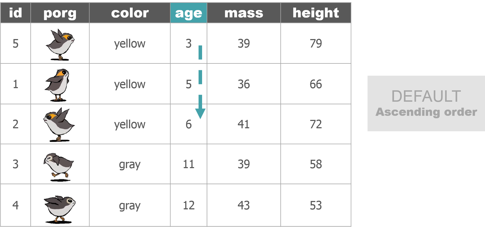
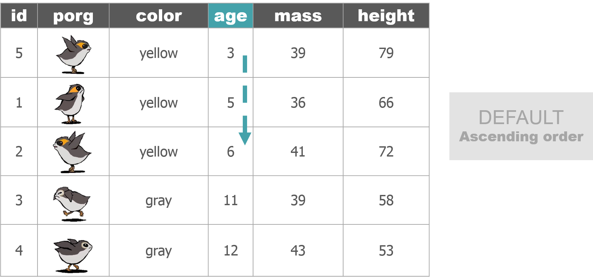

AQS format is similar to a CSV, but instead of a , it uses the | to separate values. Oh, and we also need to have 28 columns.
```r # Load packages library(readr) library(dplyr) library(janitor) library(lubridate) library(stringr)
# Columns names in AQS aqs_columns <- c(“Transaction Type”, “Action Indicator”, “State Code”, “County Code”, “Site Number”, “Parameter”, “POC”, “Duration Code”, “Reported Unit”, “Method Code”, “Sample Date”, “Sample Begin Time”, “Reported Sample Value”, “Null Data Code”, “Collection Frequency Code”, “Monitor Protocol ID”, “Qualifier Code - 1”, “Qualifier Code - 2”, “Qualifier Code - 3”, “Qualifier Code - 4”, “Qualifier Code - 5”, “Qualifier Code - 6”, “Qualifier Code - 7”, “Qualifier Code - 8”, “Qualifier Code - 9”, “Qualifier Code - 10”, “Alternate Method Detection Limit”, “Uncertainty Value”)
# Read in our data my_data <- read_csv(“https://itep-r.netlify.com/data/ozone_samples.csv”)
# Clean the names my_data <- clean_names(my_data)
# View the column names names(my_data) ```
## [1] "date_time" "site" "ozone" "latitude" "longitude" "temp_f" ## [7] "units"
```r # Format the date column # Date is in year-month-day format, use “ymd_hms()” my_data <- mutate(my_data, date_time = ymd_hms(date_time), cal_date = date(date_time))
# Remove dashes from the date, EPA hates dashes my_data <- mutate(my_data, cal_date = str_replace_all(cal_date, “-”, “”))
# Add hour column my_data <- mutate(my_data, hour = hour(date_time), time = paste(hour, “:00”))
# Create additional columns my_data <- mutate(my_data, state = substr(site, 1, 2), county = substr(site, 4, 6), site_num = substr(site, 8, 11), parameter = “44201”, poc = 1, units = “007”, method = “003”, duration = “1”, null_data_code = “”, collection_frequency = “S”, monitor = “TRIBAL”, qual_1 = “”, qual_2 = “”, qual_3 = “”, qual_4 = “”, qual_5 = “”, qual_6 = “”, qual_7 = “”, qual_8 = “”, qual_9 = “”, qual_10 = “”, alt_meth_det = “”, uncertain = “”, transaction = “RD”, action = “I”)
# Put the columns in AQS order my_data <- select(my_data, transaction, action, state, county, site_num, parameter, poc, duration, units, method, cal_date, time, ozone, null_data_code, collection_frequency, monitor, qual_1, qual_2, qual_3, qual_4, qual_5, qual_6, qual_7, qual_8, qual_9, qual_10, alt_meth_det, uncertain)
# Set the names to AQS names(my_data) <- aqs_columns
# Save to a “|” separated file write_delim(my_data, “2015_AQS_formatted_ozone.txt”, delim = “|”, quote_escape = FALSE)
# Read file back in aqs <- read_delim(“2015_AQS_formatted_ozone.txt”, delim = “|”) ```


 
